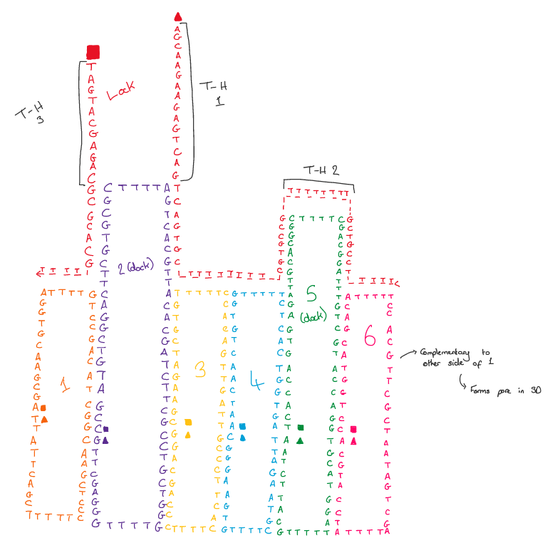
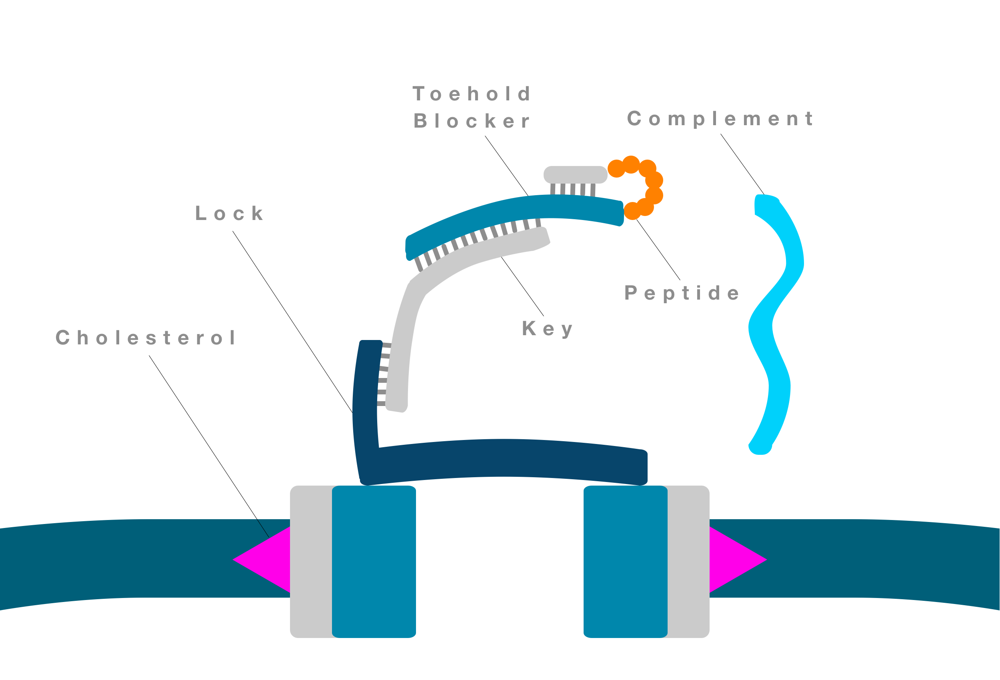
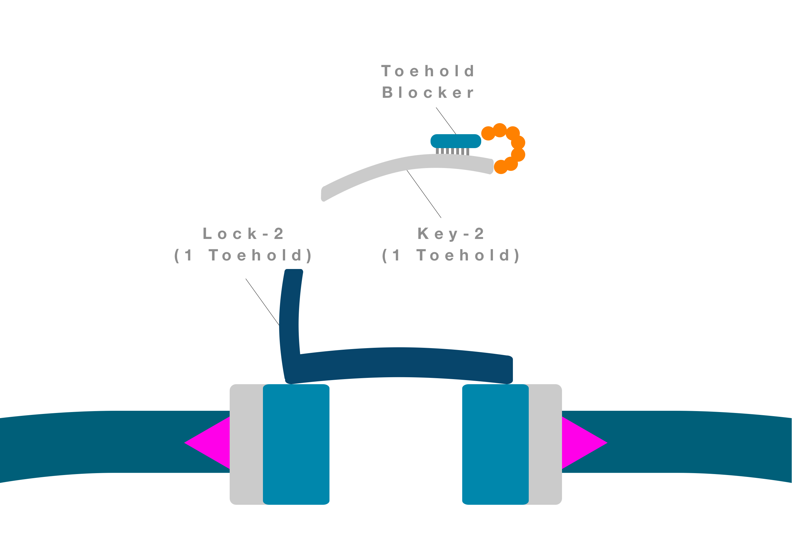

Cells have protein pores which act as molecular gate-keepers, controlling the movement of substances across the lipid walls of the cell. Carefully designing these protein pores for biosensing could hugely advance healthcare. However, it is overwhelmingly difficult to visualise and predict the interactions between the 22 possible chemical units that form proteins. This makes it hard to design and produce protein pores from scratch.
On the other hand, the 4 chemical letters that form DNA always bind like lego bricks in specific pairs: A binds T, G binds C. As a result, even lay people can use software to programme DNA to bind to itself and other DNA molecules in precise, novel 3D shapes - without ever writing any code or needing highly specialist training.
Our novel system is based upon the DNA-nanopore described by Burns et al.,(2016) , which is comprised of six DNA strands that self-assemble to form a hollow barrell. This DNA nanopore can be potentially used as a drug delivery device thanks to its ability to form a sterically sealed channel. This is possible through the addition of the ‘lock’ strand, that can hybridise with parts of the DNA nanopore strands, while leaving three toeholds openly available. The ‘key’ strand, with the complementary base sequences to these toeholds, can displace the lock from the rest of the nanopore. Once the strand displacement is complete, the lock-key hybrid dissociates away from the pore, allowing the cargo to be released from the nanopore.
The schematic below illustrates how the addition of six DNA strands can reliably self-assemble into a stable nanopore. Also detailed is the lock strand’s hybridisation to the nanopore to form the nanopore in a closed state (NP-C).
The square symbols indicate 5’ ends and triangles represent 3’ends of the DNA strands.
These DNA-nanopores can then be embedded into liposomes by adding cholesterol modifications to the 3’ end of the oligonucleotides. The hydrophobic interactions between the lipid tails and cholesterol groups allow the stable insertion of the DNA-nanopores into liposome membranes.
The original design for the lock and key strands utilised three toehold regions to obtain the desired kinetics of pore opening. To avoid off-target release of the key, these toehold regions on the key must be blocked from interacting with the lock.
These toeholds are at the beginning, middle and end of the key sequence. In order to block them, a single DNA strand acting as a toehold blocker would need to be of similar length to this key. However, this design complicates the process of key release, as the kinetics of the toehold blocker dissociating from the lock would be very slow. To solve this issue, we re-designed the toehold blocker to partially bind the key rather than to the entire sequence. This partial binding effectively inactivates the key but allows the toehold blocker to be displaced by a third strand (the complement), which is fully homologous to the toehold blocker. When such displacement takes place, a cascade of strand displacement reactions initiates, thereby releasing the key and opening the pore.
Although this schematic is an oversimplified view of the system, it establishes the core steps taken to achieve controlled opening of the pore.
The green linker enabling the hairpin structure to be formed in the blocker strand is a peptide sequence. When this sequence is cleaved by cancer-specific biomarkers (e.g. proteases), the hairpin structure becomes de-stabilised, thus initiating a cascade of strand displacement reactions.
When the linker is cleaved, the short pink strand blocking the overhanging toehold on the blocker will spontaneously dissociate and reveal the first toehold involved in a TMSD reaction.
The blocker complement (light blue) is a perfect match to the blocker and binds to the exposed toehold region. Due to its high affinity for the blocker, the complement can displace the blocker from the key. Once the first TMSD reaction is completed, the blocker/complement complex able to dissociate away from the pore. This activates the key strand to displace the lock, finally opening the pore.
To streamline the design, the key and lock strands were modified to contain one active toehold for the TMSD reaction opening the pore. This simplifies the overall process as the initial TMSD reaction in the previous design is no longer required. The single toehold present on the key is now blocked due to the hairpin structure formed by the peptide linker, which, when cleaved, allows the blocker strand to dissociate. The newly designed key (Key-2) can then hybridise to the newly designed lock (lock-2) through a TMSD reaction and the pore can open.
Key-2 was not localised to lock-2 in this design to avoid any potential effects of this on the lock-key hybridisation that were not originally predicted for.